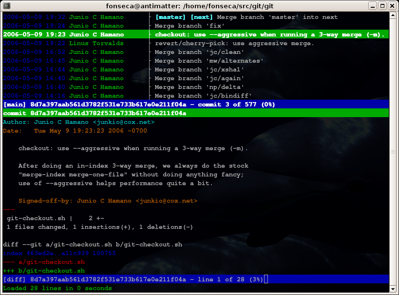

Reproducible research
Few concepts and a couple of tools, v0.1
Joona Lehtomäki
CC-BY
Attribution
- Git tutorial by John McDonnel
- Introduction to Version Control with a focus on Git by Dan McGlinn
- Reproducible research in computational science by Karthik Ram
- knitr and RStudio by Yihui Xie
Sources for this presentationa available at
Content
- Background
- Concepts
- Tools: RStudio and Git
My own PhD
Open science
"Opening up access to the data and software, not just the final publication, is one of goals of the open science movement"
(Ram, 2013)
- Open access
- Open data
- Open notebook science
- Open source software

Reproducibility
- With replication, independent investigators address a scientific hypothesis and build up evidence for or against it (Peng, 2011)
- Allows others to build upon existing work and use it to test new ideas and develop methods (Ram, 2013)
- While currently there is unilateral emphasis on "first" discoveries, there should be as much emphasis on replication of discoveries (Ioannidis, 2005)

Wolkovich et al. 2012

Peng 2011

Sirkiä et al. 2012
Tools for reproducible research
Reproducible?
- Automatically regenerate documents when code, data, or assumptions change
- Eliminate transposition errors that occur when copying results into documents
- Preserve contextual narrative about why analysis was performed in a certain fashion
- Documentation for the analytic and computational processes from which conclusions are drawn
Adapted from Markus Kainu
More R-code
# Quick summary
library(ggplot2)
summary(cars)
## speed dist
## Min. : 4.0 Min. : 2
## 1st Qu.:12.0 1st Qu.: 26
## Median :15.0 Median : 36
## Mean :15.4 Mean : 43
## 3rd Qu.:19.0 3rd Qu.: 56
## Max. :25.0 Max. :120
# Quick plot of the data
qplot(speed, dist, data = cars) + geom_smooth()

Tools for reproducible research
What is git?

- It stores snapshots of your projects
- ...It also stores the relationships between those snapshots

Why use git in science?
- Lab notebook
- Facilitating collaboration
- Backup and failsafe against data loss
- Freedom to explore new ideas and methods
- Mechanism to solicit feedback and reviews
- Increase transparency and verifiability
- Managing large data
- Lowering barriers to reuse

Ram, 2013
Git: steep learning curve?



References:
- Peng RD (2011): Reproducible research in computational science. Science. 334(6060):1226–7. Available from: http://www.pubmedcentral.nih.gov/articlerender.fcgi?artid=3383002&tool=pmcentrez&rendertype=abstract
- Ram K. (2013): Git can facilitate greater reproducibility and increased transparency in science. Source Code for Biology and Medicine. 8(1):7. Available from: http://www.scfbm.org/content/8/1/7
- Sirkiä S, Lehtomäki J, Lindén H, Tomppo E, Moilanen A (2012): Defining spatial priorities for capercaillie Tetrao urogallus lekking landscape conservation in south-central Finland. Wildlife Biology. 2012;18(4):337–53.
- Wolkovich EM, Regetz J, O’Connor MI (2012): Advances in global change research require open science by individual researchers. Global Change Biology. 18(7):2102–10. Available from: http://doi.wiley.com/10.1111/j.1365-2486.2012.02693.x